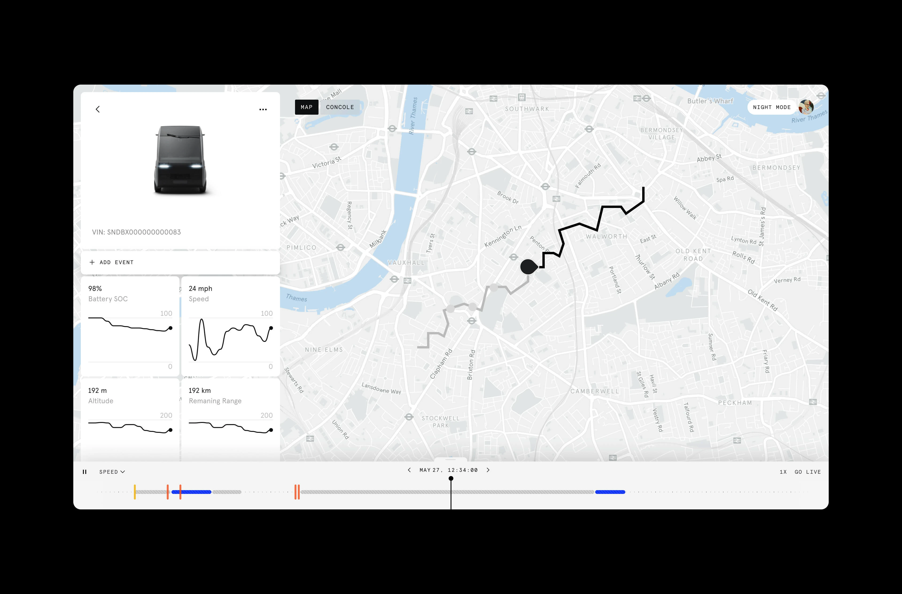
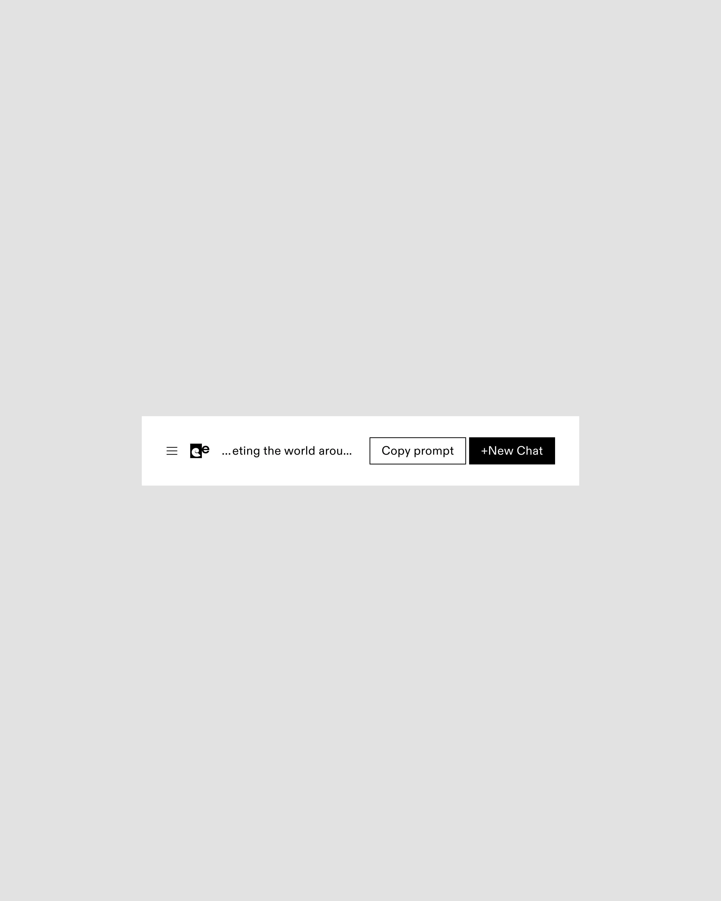
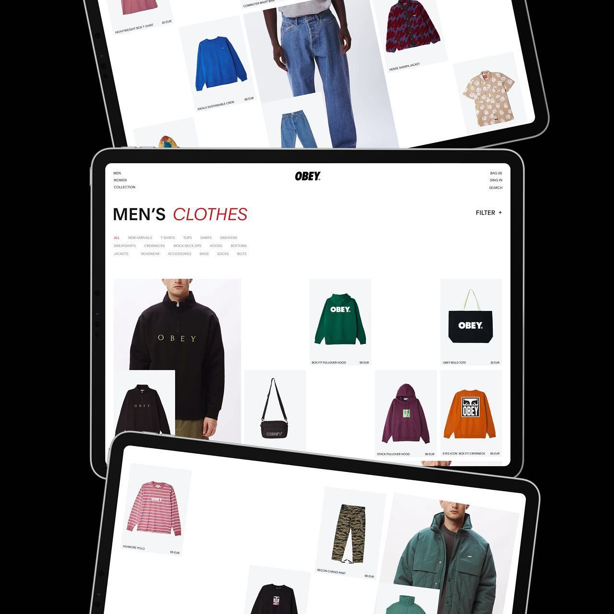
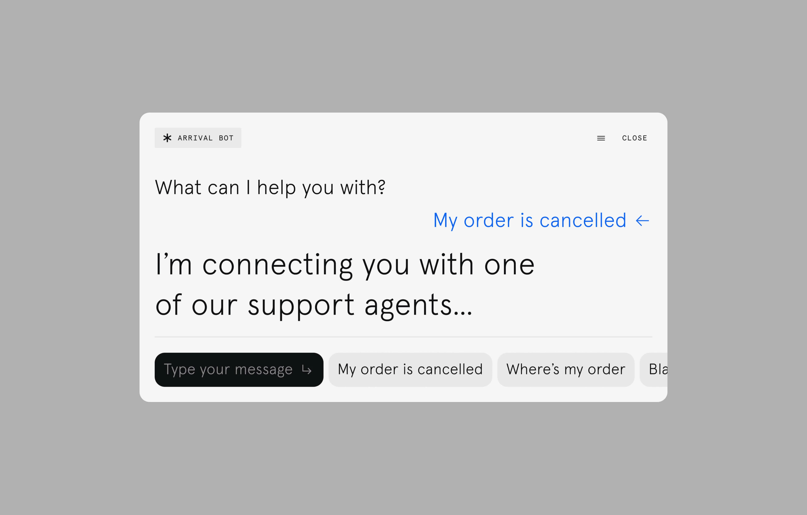
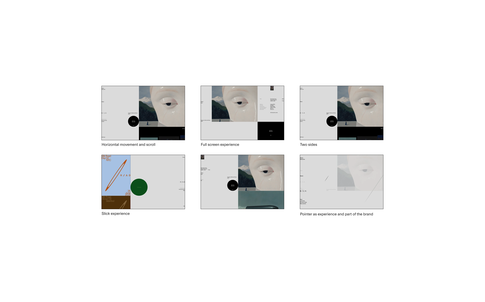
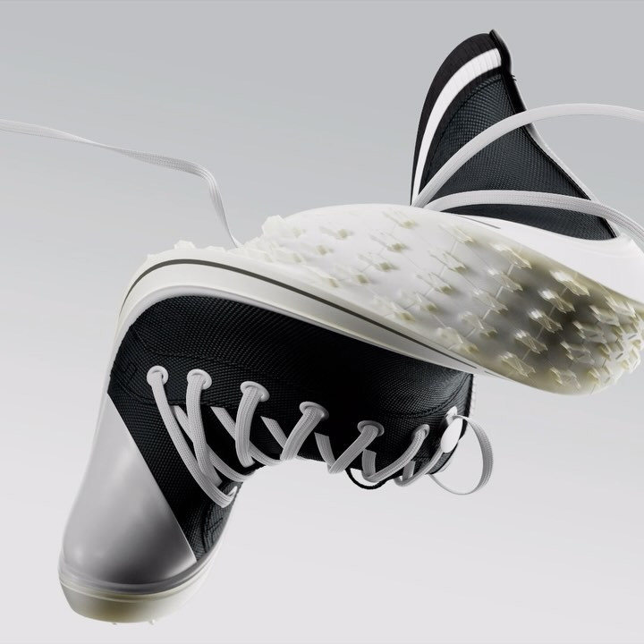

Полина выросла в «Щуке» и уехала в Берлин. Дизайн-культура для неё гибкие рамки, а AI в визуале вызывает скепсис при любви к текстам.
Как ты понимаешь дизайн-культуру? Что для тебя в её основе, что тебя движет?
Мне этот вопрос показался очень сложным. Нет такого определения, ты не прочитаешь его ни в каком учебнике. Для меня оно очень широкое и не очень структурированное. Потому что культура – это какие-то нормы, правила, рамки. И вот в дизайне они, конечно, есть, но они очень ограничивают свободу мысли и идеи.
Я бы, наверное, сказала, что это действительно рамки и принципы. Когда я разгоняла это в голове, мне попалась фраза про принципы Дитера Рамса, десять штук, которым следует Apple как чему-то совершенно непробиваемому. Чего-то они теряют, потому что остаются верны эстетике; чего-то не догоняют, потому что AI им даётся тяжело. И мне показалось: креативные специалисты, которые работают в формате услуг, очень сильно фреймят клиента – за счёт какой-то личной культуры и принципов.
Я бы по-другому сказала. Это клиент очень сильно фреймит твоё визуальное направление. Он пришёл к тебе как к подрядчику, как ты пришла стричься: у тебя есть свои запросы, парикмахер может рассказать, почему вот это классно, но он не может просто решить побрить тебя, потому что у него такой стиль. В связке между агентством, дизайн-частью в корпорации и клиентом всё-таки клиент чуть выше. Финальное решение за ним, потому что ему деньги платят. Поэтому фреймер – он.
И когда нет клиента, то и рамок нет. Но рамки на самом деле как будто бы нужны. Рамками можно назвать и свой стиль, и методы, и deliverables. Если говорить про культуру дизайна – рамки нужны, но важно самим себе их выстраивать. Чтобы они были флексибельными, могли иногда подвинуться, расшириться, видоизмениться. Потому что если они у тебя всегда в очень жёстком сухом состоянии, то и дизайн будет получаться более сухой.
Хорошая характеристика рамок в дизайне – это айдентика. Ты же не просто логотип ставишь, ты придумываешь историю и графику, и как она взаимодействует с разными носителями. Где-то логотип кадрированный, где-то маленький, где-то большой – в этом тоже стиль. Культура дизайна, про то, чтобы самому себе под разную задачу, под разного клиента выстроить свои собственные рамки. Чтобы не улететь и чтобы учитывать всё то, чему тебя в университете научили.
Культура дизайна, про то, чтобы самому себе под разную задачу, под разного клиента выстроить свои собственные рамки. Рамки нужны, чтобы не улететь, и чтобы учитывать всё то, чему тебя в университете научили.
– Полина Загуменова
Почему Берлин и чем ты сейчас там занимаешься?
Я закончила Британку у Славина в 2018-м. Пока училась – поработала в студии Артемия Лебедева и в агентстве «Repina Branding». Потом ушла в Парк Горького, мы запустили один каток, и я ушла в «Natural Siberian», там два года занимались молодёжным брендом. Прикольным, который, к сожалению, не выпустили: владелец испугался тратить много денег. Было очень грустно. После этого – «Щука», с 2020-го по начало 2024-го. Там я выросла с графического дизайнера до сеньора, потом до арт-дира. А когда переехала в Берлин – ушла из «Щуки», потому что посчитала, что мне важно делать зарубежные проекты.
Классно делать проекты на том рынке, на котором ты живёшь, потому что контекст совершенно разный. Я не знаю, что сейчас происходит в России, я не нахожусь в этом вайбе. Насколько слышу – появилось много агрессивной рекламы, бренды-маркеты Wildberries, Ozon, Яндекс всё время конкурируют на огромных уличных экранах. Это совсем другая среда. Дизайн очень сильно завязан на среду, в которой ты живёшь, ты должен её чувствовать, знать, понимать.
Почему Берлин? Сюда было довольно просто получить визу фрилансера. Много кто так делал. Это супер изи степ. Дальше всё сложнее: квартиру найти, клиентов найти, страховку сделать – это уже сложно.
И раз у меня виза фрилансера, я решила, что чего бы не побыть фрилансером, я никогда им не была. Когда ты ещё джун, ты тоже можешь фрилансить, но не будешь расти, и тебе сложно полностью отвечать за свой дизайн. Когда ты уже был арт-директором, ты можешь взять проект целиком, уверенно его презентовать, ты прошёл все шаги. Ну вот сейчас полтора года я фрилансер в Берлине. Клиенты в основном американские, немного немецких. Чтобы здесь классно работать, нужен немецкий, который я учу. Так что если я работаю с немецкими студиями, я скорее придумываю графику, а вёрстку они делают сами. Висячие союзы, предлоги, всякие мелкие штуки – без языка не сможешь.
Дизайн очень сильно завязан на среду, в которой ты живёшь, ты должен её чувствовать, знать, понимать.
– Полина Загуменова


Есть ли какие-то ритуалы или практики, которые ты замечаешь за собой в работе?
Я всегда прошу в меня закидывать. Ты же всё равно думаешь над проектами не только когда сидишь за компьютером. Тебе закинули, ты едешь на велике, стоишь в душе, и где-то что-то приходит. Не знаю, как там оно перерабатывается. Это я про то, что классно брифоваться и потом уходить – в смысле не сидеть сразу после этого за компом.
Ещё я считаю, что очень важно соблюдать ворк-лайф баланс. Ты что-то сделал – у тебя не получается, прошло уже часа два-три – классно выйти, побегать, сменить активность. Я как фрилансер часами считаю, и это хорошая практика. Когда ты в агентстве или на стороне клиента, можно растягивать. А когда фрилансер, ты сам по времени планируешь день. Вместо того чтобы ещё час двигать что-то на экране, лучше пойти в магазин, выйти из дома, перезагрузиться на полчаса, и всё потом быстро сделается. Очень важно мозг переключать и давать ему отдыхать.
Когда я начинаю проект – кроме того, что тебе что-то закинули, важно посидеть в Инстаграме, на, прости Господи, на Pinterest, что-то поискать. Я вообще не против этого. Очень важно в себя закинуть, как в ChatGPT, кучу-кучу картинок, которые там будут перевариваться, чтобы выдать новое.
Классно брифоваться и потом уходить. Тебе закинули, ты едешь на велике, стоишь в душе, и где-то что-то приходит.
– Полина Загуменова

Хочется поговорить про какой-нибудь любимый кейс, где органично вплелся твой vision, твои сформулированные на старте принципы и решения.
Куча всяких рамочных проектов, которые мы делали в «Щуке». Но мой последний клиент, мой любимый – это бренд марихуаны из Америки. Мы работаем больше года, очень много разных упаковок. И это первый клиент, с которым ты делаешь просто арт-штуки. У тебя свобода, и ты при этом ещё делаешь упаковку: то, что производится и за что деньги платят. Я экспериментировала, и буковки рисовала, и разные способы печати использовали. Здесь у меня была свобода, и чувакам нравилось всё, что мы делали, потому что нет жёстких рамок и никто не думает, что понравится потребителю.
Что ещё из прикольного – недавно у меня была книжка «Гайд по Парижу». Туристический гайд с модными местами, по сути про вёрстку. Но круто, что это для Парижа и модный фотограф, и было прикольное открытие с этой книжкой. После работы в агентствах и больших корпоративных штуках я здесь кайфовала и делала маленькие нишевые вещи. И мне от этого было прикольно. Скорее, более экспериментально. Например, титры для видео, для журнала с показа модного дизайнера в Берлине: у Velveteen, шрифтовой студии (французской, по-моему), есть бесплатные ртовые шрифты. Суть показа – каждый несёт свою одежду и он герой; поэтому я для каждого подобрала свой шрифт. И на финальном слайде их намешала.
Это первый клиент, с которым ты делаешь вообще просто арт-штуки. У тебя свобода, и ты при этом ещё делаешь упаковку. То, за что деньги платят.
– Полина Загуменова
У тебя была вирусная история с плакатами – «я ищу работу», «открыта к проектам». Ты ещё печатаешься, расклеиваешь?
Прикольная штука была. С неё пришли какие-то клиенты, но так как штука нишевая, не очень массовая и не очень артовая, клиенты пришли не то чтобы прям арти-арти. Сейчас я такое не печатаю. Сейчас у меня есть плакат для более арт-целевой аудитории. С него работ не было, но прикольные чуваки подписывались из арт-тусовки. Это скорее нетворк. Понятно, что ты во многом делаешь это для себя, но это ещё и способ заколлабиться, познакомиться.



(вспоминает один из проектов Полины – ребрендинг для AI-сервиса)
Мы сделали его вместе с моим бывшим коллегой, моушн-дизайнером Димой Козляевым. Сделали графику, нарисовали логотип, придумали переливание – как картинка в другую генерится, чтобы показать волшебство генерации изображений. Они потом всё это убрали. Ну ладно. После ребрендинга мы стали работать у них на поддержке – пару месяцев, и начали уже сами генерить контент. К тебе приходят, говорят: «Нам нужны посты». Туда надо добавить типографику, сгенерить картинку, потому что в этом случае не на стоке ищешь, а генерируешь. Не фотосъёмку приносят, а ты сам генеришь.
Мне это жутко не нравилось. Вообще не моё. Я старалась, но это вообще не моё. У меня был такой опыт взаимодействия с AI, очень тесный, и мне не очень понравилось. Это вкусовое. Очень крутые штуки сейчас делают – у меня есть подружка-фотограф Женька Филатова, она крутых существ делает, и давно начала. Но мне не зашло.
И пока я не чувствую, что AI делает что-то прям крутое именно в дизайне. С Recraft мы прям сидели, там тоже есть, куда расти. Какие-то иконки делать – классно. Но какие-то вещи поглубже – это пока тяжело. Иногда я прихожу, спрашиваю: «Сделай мне картинку». Но обычно мои промпты не работают. Я знаю, что это отдельная работа. Не сложилось.
Мне, наверное, не очень страшно. Я, конечно, пользуюсь, как и все люди, чатом GPT. Это любимка, и тексты – супер. К текстам у меня нет вопросов. К картинкам пока ещё есть большие вопросы. И, наверное, не страшна генерация идей: пока сетка очень топорно – топорные мысли первые показывает. Её надо очень сильно развивать, чтобы она начала думать как арт-директор.
К текстам у меня нет вопросов. К картинкам пока ещё есть большие вопросы.
– Полина Загуменова
Я бы сказала, что есть штуки, в которых круто быть мастером. Без опыта в одной этой штуке ты не сделаешь классный шрифт. Я ходила на летний курс «Контраст Фаундер» – две недели, советую. Это совсем другой мир. Я поняла, что это не моё, очень детализированная задрочистая штука: ты замеряешь каждую букву, рисуешь четыре основные, у которых правильные выносные элементы и форма очка, а потом на основе этих форм рисуешь весь алфавит. Всё вручную, долго и тяжело. И такой же отдельный мир – книжная типографика. Книги верстать, это очень крутой навык. Есть именно книжники, у которых свой стиль. Они и во всём другом больше внимания уделяют типографике – это не плакатная типографика, это очень тонкая настройка к читаемости, к отделению.
Угу.
«Щука» мне это привила, потому что там все очень аккуратно к шрифтам и типографике относятся – кто Щуку основывал, ребята из Института печати. Но я вообще за эксперименты и более лёгкое отношение к дизайну. Это всё игра, и надо кайфовать.
Если бы ты могла дать совет себе самой в начале пути, что бы это было?
(в источнике эта секция в основном проговаривается DF; Полина подтверждает и комментирует – см. [РК]) В начале пути ты очень боишься, и все боятся, и все боятся ошибиться. Надо не бояться делать говно и идти дальше. Ну то есть без говна не получится чего-то хорошего. Прям классно быть свободным, экспериментировать, ещё будучи маленьким, и идти работать. Система-то понятная. Классно идти работать во все студии. Не надо идти на сторону клиента, когда ты только начинаешь, потому что сторона клиента она больше про деньги, а студия, больше про опыт и мастерство. На стороне клиента ты будешь расти, только если у тебя классная команда, и то это будет однобокий рост, потому что он зависит от продукта. А в агентстве пару лет в начале классно поработать, потом уходить на сторону клиента и расти там, и зарабатывать деньги.
О практике
Полина Загуменова – фриланс-дизайнер и арт-директор, ex арт-директор бренд-бюро Щука.